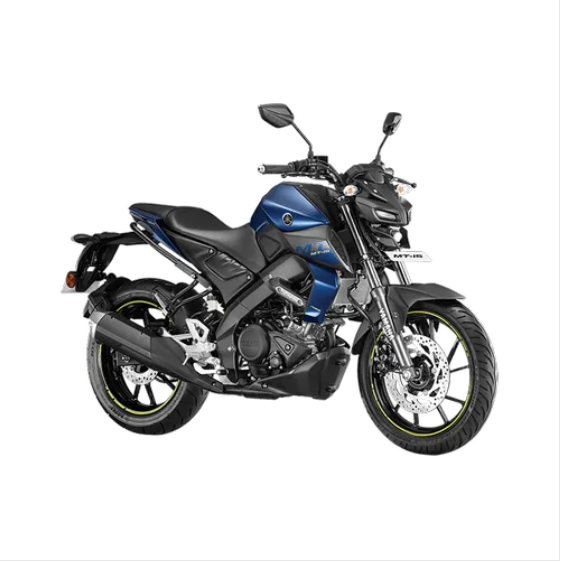
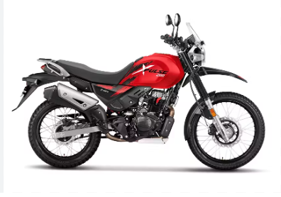
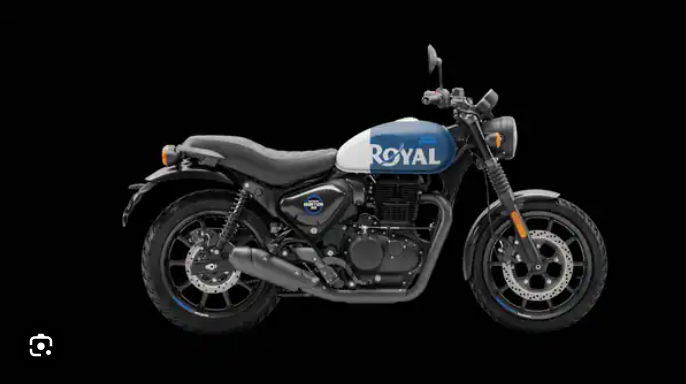
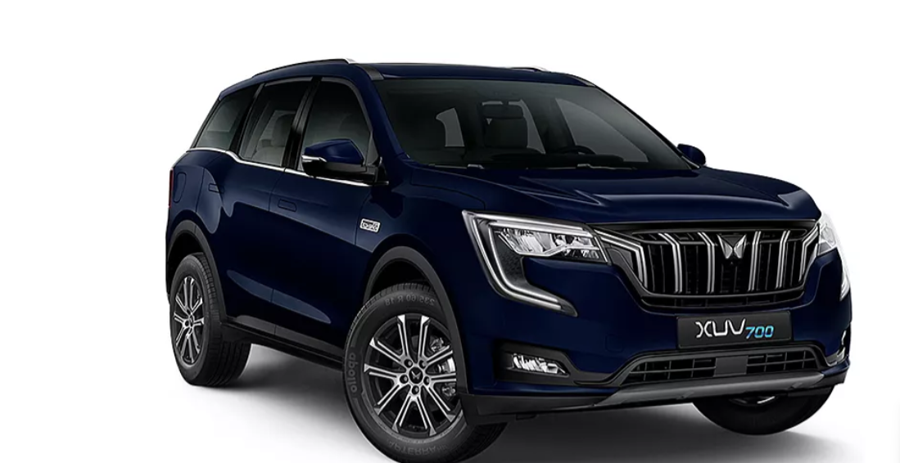
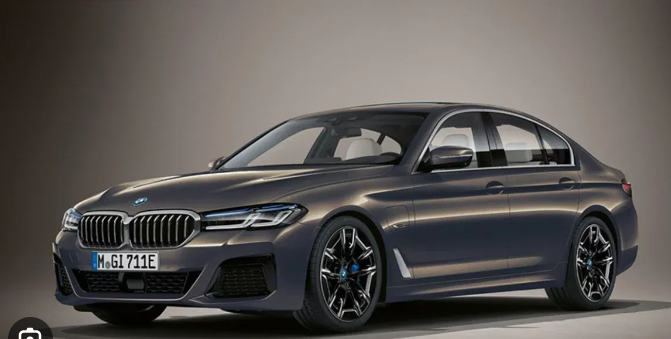

Car Bike Webpage
YAMAHA MT 15

The Yamaha MT-15 V2 is a thrilling bike with a powerful 155cc engine, quickshifter, and slipper clutch.
Its lightweight chassis offers nimble handling, and the suspension provides a balance of comfort and stability.
The braking system includes dual-channel ABS and traction control for safety.
HERO

The successful brand has launched several long-lasting bikes like Hero Splendor,
HF Deluxe, Passion, Karizma, and more. Since its inception in 1984,
this brand has been at the forefront of offering a reliable set of two-wheelers.
ROYAL ENFEILD

Royal Enfield bikes are more than machines or automobiles to Indians.
The brand for years has been known to deliver ace-quality automobiles.
Headquartered in Chennai, RE has been manufacturing cruiser bikes since 1901.
MAHINDRA

For its easy manoeuvrability, feature wealth, powerful set of engines, and excellent ride comfort,
the Mahindra XUV700 is one of the best value-for-money offerings under Rs. 30 lakh.
Moreover, with a 5-star G-NCAP safety rating, it is also one of the safest cars in India.
BMW

The BMW Group is the world's leading provider of premium cars and motorcycles.
Our vehicles and products are tailored to the needs of our customers and constantly enhanced
with a clear focus on sustainability and the conservation of resources.